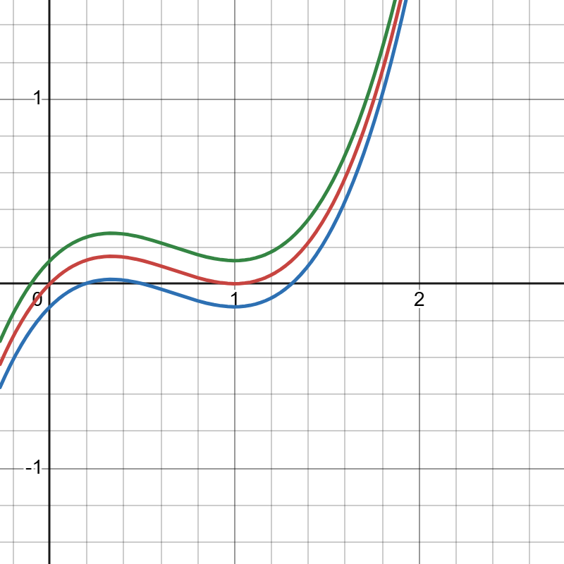

A foundational course for understanding mathematical modeling.
This course introduces complex numbers, complex functions, analytic functions, complex integration and more.
As you progress through this course, you will find links to related topics in other courses (such as calculus, quantum mechanics and partial differential equations). This interconnected structure is designed to help you quickly revisit prerequisite ideas without breaking your workflow.

If we look at the plot above, what exactly happened as we moved from the lower (blue) curve, to the upper (green) curve? The obvious change is that we added a constant "shift" term, which shifted the curve upwards, but notice that the lower curve passes through the \(x\)-axis 3 times, the middle curve only passes through the \(x\)-axis twice and the upper curve only passes through it 1 time. We would say that these have 3, 2, and 1 real roots respectively. This leads naturally to the question, where did the other roots go as we passed from the lower curve to the upper one? Since these are just shifted versions of each other, why don't they have the same number of roots? The middle curve is somewhat easy to explain, two of the roots collapsed onto a single root (namely \(x=1\)) as the curved moved from blue to red. Technically the red curve still has 3 roots, but one of those roots is degenerate, in this case that means that the \(x=1\) root should get counted twice. In fact this is easy to see from the red curves equation, $$f(x) = x(x-1)^2.$$ However, when the equation moves upward to the green curve, with an equation, $$g(x) = x(x-1)^2 + 0.125,$$ there are no longer any degenerate roots (because of the addition of the term \(0.125\) it is clear that \(x=1\) no longer gives us \(0\)). So where did those other two roots go?If you want the fast version, below is a short video introducing limits.
Though this is not exactly how the question was pitched at the origin of experimentation with complex numbers, a variation on this question was being asked. What was interesting of course was the solutions of any general cubic equation, $$x^3+a_2x^2+a_1x+a_0 = 0,$$ where the coefficients \(a_2,a_1,a_0 \in \mathbb{R}\) (that is each of those coefficients are real numbers). And if you haven't guessed the answer to my question above, what happened to those other two solutions is that they were "pushed" into the complex plane. So, while one real root always remains for the cubic no matter how much I increase or decrease the constant I add on (or any cubic for that matter with real coefficients), the other two roots become imaginary. Interestingly, when those coefficients are real, we are guaranteed that the imaginary roots will come in complex conjugate pairs (don't worry we will define the complex conjugate shortly if you have never heard that term).
Placeholder
More to come!